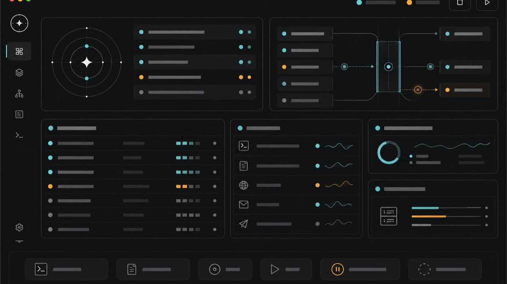

Florida Tech CS
I make AI agents show their work.
Local-first tools for Codex and browser automation: screenshots, logs, reruns, lane state, and reports.
Traffic control for many Codex chats running on one Mac.
02 TaskProofBrowser tasks turned into screenshots, logs, and rerun reports.
03 AgentProofProof packets for AI-built apps and public PRs.
